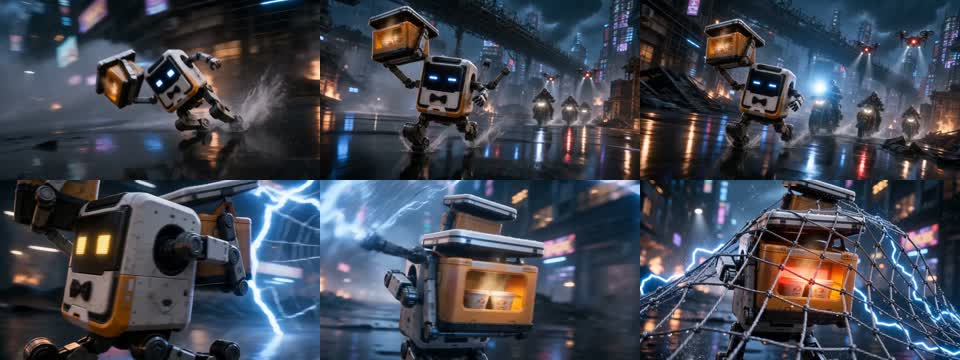
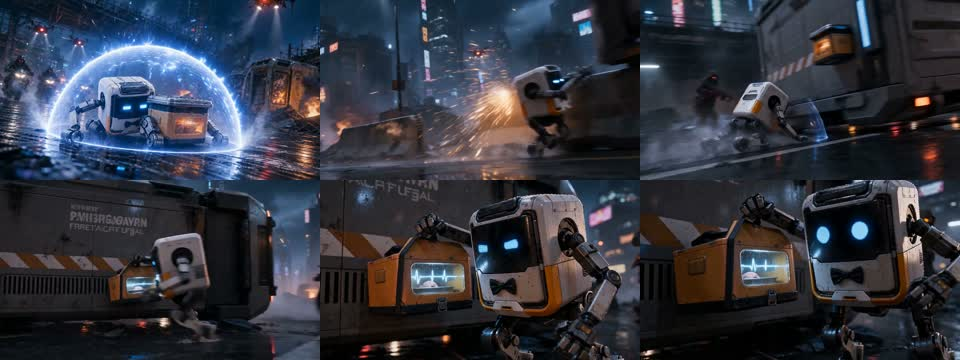
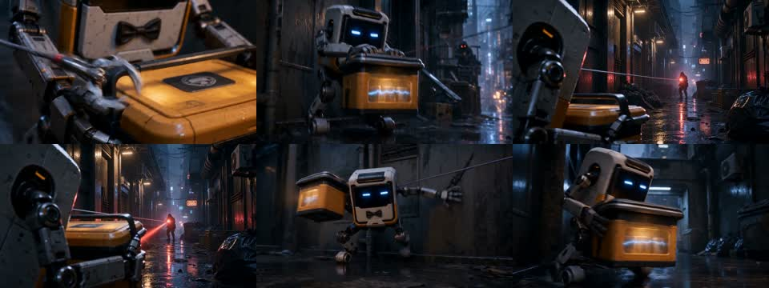
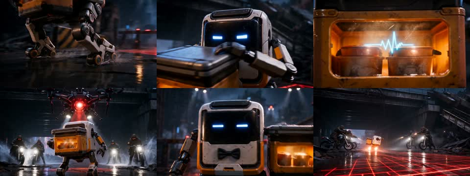
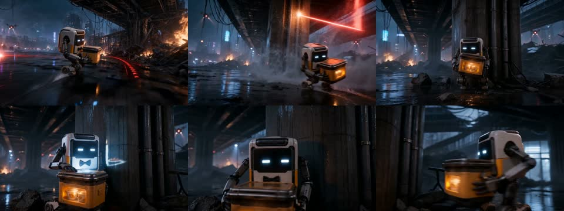
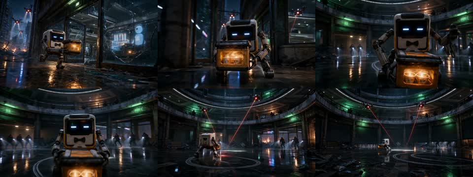
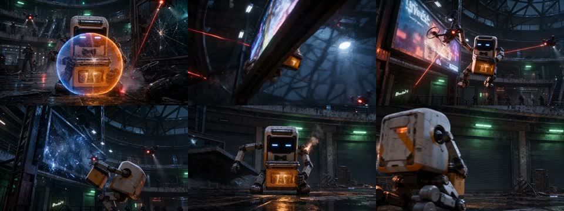
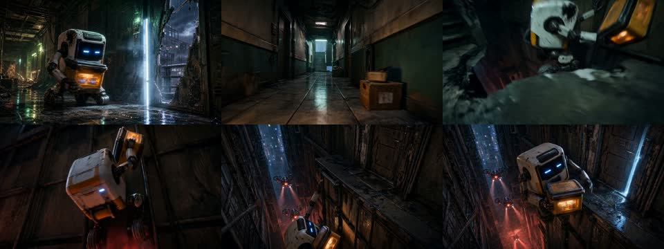
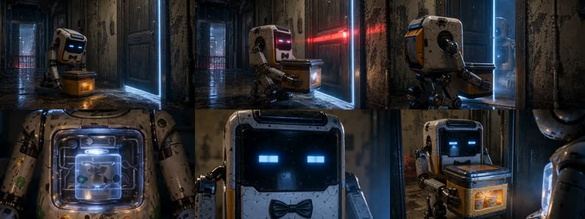
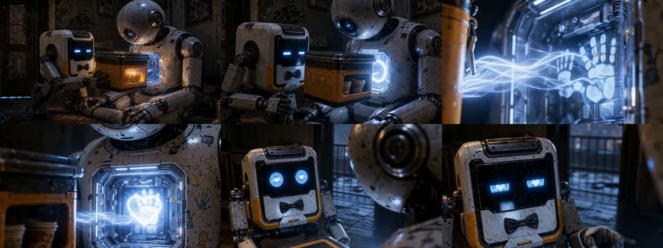

每张图按约 2.5 秒抽帧。重点看动作是否可读、段尾是否泄气、下段能否自然接住。

追击方向清楚。建议快速进入电磁网威胁，尾部不留长停顿。

护盾、躲避、反制连续可读，可作为全片动作剪辑节奏基准。

空间连续，适合用金属绷紧声跨镜连接，不宜添加花哨转场。

扫描与“人类残留样本”是第一个剧情峰值，应保留清楚的声音落点。

生日记忆需要短促出现。压缩观察与停顿，让危险持续追在身后。

入口和中庭动作方向较弱，优先保留明确移动、命中与卷帘门封锁。

广告屏、电火花和无人机构成最大爆点，剪辑应加速并形成短促连续命中。

门与缺口存在逻辑风险，用近景动作和声音桥避开穿墙感，快速进入垂直攀爬。

允许第一次真正降速，但门禁、开门、接收者亮起必须各有明确推进。

保留连接、记忆光、最终问题。压缩重复慢推，用声音与光流维持生命感。
高压追逐 01-03 → 真相第一次爆开 04 → 短暂情绪呼吸 05 → 围猎加速 06-07 → 垂直逃生 08 → 安静反转 09-10
剪辑语言以硬切、动作匹配和声音桥为主。避免模板转场、长慢动作和重复展示同一个反应。